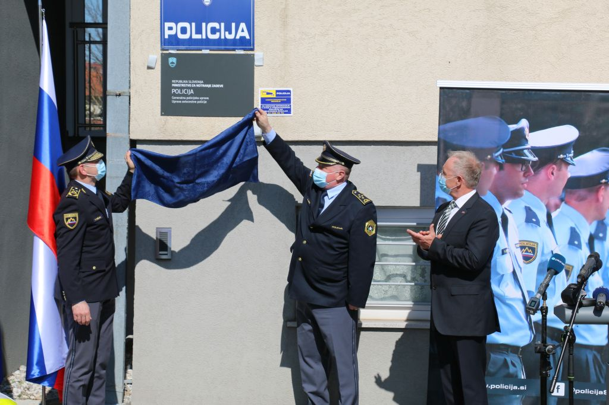

Ob današnjem uradnem začetku delovanja Uprave avtocestne policije (v nadaljevanju: UAP) smo predstavniki Policije in Ministrstva za notranje zadeve podrobneje pojasnili razloge za ustanovitev te organizacijske enote in obenem predstavili naloge, ki jih bodo opravljali policisti za zagotavljanje večje varnosti na avtocestah in hitrih cestah. Dogodka ob otvoritvi UAP so se v Postojni, kjer je sedež novoustanovljene uprave, danes, 31. marca 2021, iz MNZ in Policije udeležili minister za notranje zadeve Aleš Hojs, namestnik generalnega direktorja policije Tomaž Pečjak in direktor uprave Andrej Jurič. Zvočni posnetek govora namestnika generalnega direktorja policije Tomaža Pečjaka Zvočni posnetek govora ministra za notranje zadeve Aleša Hojsa Na potrebo po vzpostavitvi posebne enote, ki bi učinkoviteje nadzirala avtocestni križ, v stroki opozarjali že vsaj zadnjih deset let Zaradi izgraditve avtocestnega omrežja, uvedbe vinjetnega sistema in znatnega povečanja tranzitnega prometa na avtocestah si je vodstvo Policije že leta 2011 zastavilo za cilj, da na avtocestah posodobi delovanje policije in da prometno policijo obenem tudi ustrezno kadrovsko okrepi. Prvotni koncepti vzpostavitve avtocestne policije v Sloveniji sicer segajo že več kot deset let nazaj. Bili smo ena redkih držav v Evropski uniji, ki še nismo imeli avtocestne policije, čeprav imamo t. i. avtocestni križ na območju celotne države. Zato smo potrebo po okrepitvi nadzora na avtocestah in hitrih cestah zapisali tudi v Resolucijo o nacionalnem programu varnosti cestnega prometa 2013–2022, kjer je bila kot opcija predvidena tudi tako imenovana avtocestna policija. Za povečanje nadzora so bile v preteklih letih uvedene spremembe, ki pa niso bile povezane s kadrovsko okrepitvijo prometne policije (vpeljane so bile nove metodologije nadzora, načrtovanje poostrenih nadzorov, pridobljena nova tehnična oprema za nadzor cestnega prometa, okrepljeno sodelovanje v Nacionalnem centru za upravljanje prometa itd.). Tako se je v zadnjem obdobju spet okrepila ideja o spremenjeni organiziranosti policije, ki bi omogočala večji, predvsem pa učinkovitejši nadzor na avtocestah in hitrih cestah. Na podlagi teh razmišljanj je bil nato pripravljen koncept, ki je predvidel postopno vzpostavitev dodatnih policijskih enot za delo na teh cestah, ob ohranitvi obstoječih postaj prometne policije, ki delujejo znotraj policijskih uprav in bodo še naprej izvajale nadzor na ostalih cestah. Predvideli smo tudi večjo vlogo Nacionalnega centra za upravljanje prometa pri Ministrstvu za infrastrukturo, prav tako je bil za realizacijo projekta avtocestne policije 23. decembra 2020 že podpisan sporazum o sodelovanju med Ministrstvom za infrastrukturo, Ministrstvom za notranje zadeve, DARS-om in Policijo. Z DARS-om je bil podpisan tudi sporazum o sodelovanju pri uvedbi sekcijskega merjenja hitrosti.
